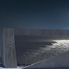
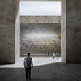
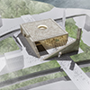
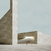
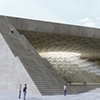
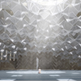
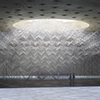

Location
UAE - Dubia
Client
Emaar properties
Status
Concept design stage
Project year
2018
“Light Descends Upon Flying Birds”
There are two Ayahs in Surat An-Nur that describe the relationship between the creator and the creatures. The first verse,
describing the light God gives to all his creatures.
“Allah is the Light of the heavens and the earth. The example of His light is like a niche within which is a lamp, the lamp
is within glass, the glass as if it were a pearly [white] star lit from [the oil of] a blessed
olive tree......”
And the second verse describes all the creatures as they go to the creator with praise and glory
"Do you not see that Allah is exalted by whoever is within the heavens and the earth and [by] the birds with wings spread
[in flight]? Each [of them] has known his [means of] prayer and exalting [Him], and Allah is
knowing of what they do."
This is the governing law of that interactive relation between creator and creatures.
The mercy is descendent from the creator to the creatures and the souls are shining by glorification
of Allah, the creator.
The structure of our mosque consists of this duality:
“Descending mercy vs. flying souls”
Light shining from a narrow nozzle filling the place, on the other hand a structure of crystalline glass
flies towards the light. (Like a swarm of birds flying upward towards the light)
Duality of Soul and Body
This duality , which represents the most important dilemma in human life which is weighed in between
his body that connects him to his physical world and his spirit that attracts him to his creator. This
duality was expressed in the construction of this mosque on three faces:
Dark and light: a majestic semi-enclosed envelope has been built from the opaque-controlled sides and
has an upper middle slot from which the light is carried out to disperse the darkness.
Opaque and translucent material: The mosque consists of a coarse and enclosed outer crust with a bright
transparent crystalline-glass heart.
Duality of ascending and descending: The light descends from the top of the mosque from the upper main
slot and in return the glass composition rises from bottom to top.
Basic Generative Unit ( Moqarnas & Origami)
The clarity of the basic unit of the mosque construction is a fundamental feature of the traditional
mosques as it is a fundamental base in the construction of all natural systems.
The basic unit of our current mosque is inspired by the Moqarnas in Islamic civilization and the art
of Origami in Japanese civilization, both of them has special secret, mystery and beauty.
Perhaps the source of this magic lies in its ability to reshape itself according to geometric rules
that looks magical and belongs to the same dynamic organic world. It is the principles of generative
geometry that are not bounded by any boundary and has no limits.
The basic unit of our mosque, which forms the crystalline fabric that symbolizes the flying swarm of
birds, is in fact the abstraction of the flying shape in the art of origami that has been assembled,
re-fitted and repeated several times to form this annexure swarm of crystals in the form of a majestic
but transparent composition that transmits the light and reflects the basic idea of the mosque which
is the dialogue between the light and flying birds.
"والطير فوقهم صافات" ...رحمات تتنزل وارواح تهفو
هناك آيتين فى سورة النور تصف العلاقة بين الخالق والمخلوق الآية الاولى تصف النور الذى يهبه الله لجميع
مخلوقاته
" اللَّهُ نُورُ السَّمَاوَاتِ وَالْأَرْضِ مَثَلُ نُورِهِ كَمِشْكَاةٍ فِيهَا مِصْبَاحٌ الْمِصْبَاحُ
فِي زُجَاجَةٍ الزُّجَاجَةُ كَأَنَّهَا كَوْكَبٌ دُرِّيٌّ يُوقَدُ مِنْ شَجَرَةٍ مُبَارَكَةٍ زَيْتُونَةٍ
لَا شَرْقِيَّةٍ وَلَا غَرْبِيَّةٍ يَكَادُ زَيْتُهَا يُضِيءُ وَلَوْ لَمْ تَمْسَسْهُ نَارٌ نُورٌ
عَلَى نُورٍ يَهْدِي اللَّهُ لِنُورِهِ مَنْ يَشَاءُ وَيَضْرِبُ اللَّهُ الْأَمْثَالَ لِلنَّاسِ
وَاللَّهُ بِكُلِّ شَيْءٍ عَلِيم"
والآية الثانية تصف جميع المخلوقات وهم يتوجهون للخالق بالتسبيح والتعظيم
"أَلَمْ تَرَ أَنَّ اللَّهَ يُسَبِّحُ لَهُ مَنْ فِي السَّمَاوَاتِ وَالْأَرْضِ وَالطَّيْرُ صَافَّاتٍ
ۖ كُلٌّ قَدْ عَلِمَ صَلَاتَهُ وَتَسْبِيحَهُ ۗ وَاللَّهُ عَلِيمٌ بِمَا يَفْعَلُونَ“
هذا هو القانون الحاكم لتلك العلاقة التفاعلية بين الخالق والمخلوق الرحمات تتنزل من الخالق الى المخلوق
والارواح تهفو إلى الخالق بالتسبيح
بنية المسجد تتمثل فى تلك العلاقة الثنائية :
“رحمات تتنزل وارواح تحلق “
نور يسطع من فوهة ضيقة ليملا ارجاء المكان وتكوين زجاجى بلوري محلق باتجاه النور وكأنه سرب من الطيور
التى تحلق صاعدة باتجاه النور .
ثنائية الروح والجسد
هذه الثنائية التى تمثل الاشكالية الاهم فى حياة الانسان والتى يتزن فيها بين جسده الذى يربطه بعالمه
المادى وروحه التى تجذبه لخالقه، هذه الثنائية تم التعبير عنها فى بناء هذا المسجد على ثلاثة اوجه:
ثنائية العتمة والنور :
وقد تم بناء غلاف مهيب شبه مغلق من اغلب الجهات يسيطر عليه الظلام وبه فتحة علوية فى المنتصف ينفذ منها
النور ليشتت الظلام .
ثنائية المادة المعتمة والمادة الشفافة :
حيث يتكون المسجد من قشرة خارجية خشنة ومغلقة وبداخلها قلب زجاجى بلورى لامع وشفاف
ثنائية الصعود والهبوط :
حيث يهبط النور من اعلى المسجد من الفتحة الرئيسية العلوية وفى المقابل يصعد التكوين الزجاجى من اسفل
الى اعلى باتجاه النور.
الوحدة البنائية للتكوين الزجاجى
"المقرنص والاوريجامى"
وضوح الوحدة البنائية لبناء المسجد يمثل قاعدة اساسية فى بناء المساجد التقليدية كما يمثل قاعدة اساسية
فى بناء كل الانظمة الطبيعية ، تلك البنية العضوية الحية ظلت حاكمة لكل المساجد فى مختلف الثقافات فى
كل انحاء العالم .
الوحدة البنائية فى مسجدنا الحالى مستوحاه من المقرنص فى الحضارة الاسلامية وفن الأوريجامى فى الحضارة
اليابانية ، ولكل منهما سر خاص ويتمتع بتركيب هندسى ساحر . ربما مصدر هذا السحر يكمن فى قدرته على اعادة
تشكيل نفسه وفق قواعد هندسية تبدو خارجة عن اطار السيطرة البشرية وتنتمى لنفس عالم الطبيعة العضوى الحيوى
. يمكننا تخيل انها مبادئ الهندسة التوليدية التى لا تبدو وكأنها لا يحدها حد ولا يعلم مداها أحد ممن
يتعاملون معها .
الوحدة البنائية فى مسجدنا والتى تشكل النسيج البلوى الذى يرمز لسرب محلق من الطيور هى فى الواقع تجريد
لشكل الطائر فى فن الاوريجامى وقد تم تجميعها واعادة تركيبها هى نفسها عدة مرات لتشكل هذا السرب الملحق
من البللور فيما يشيه تكوين مقرنص مهيب ولكنه شفاف ينفذ من خلاله النور.